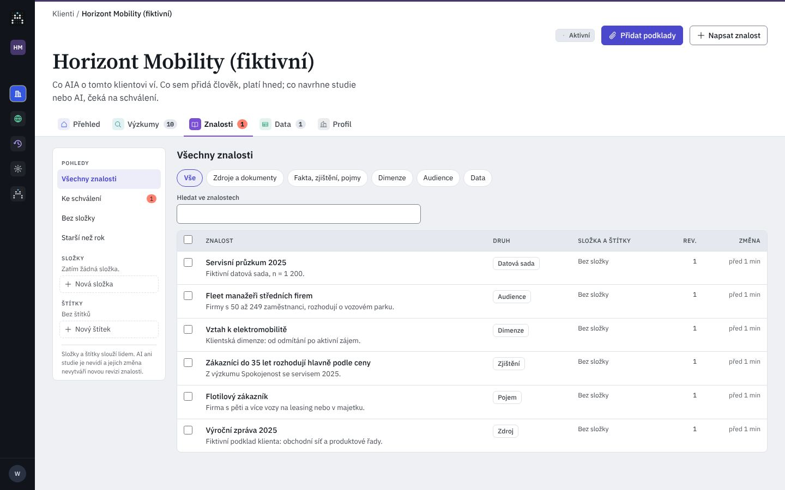
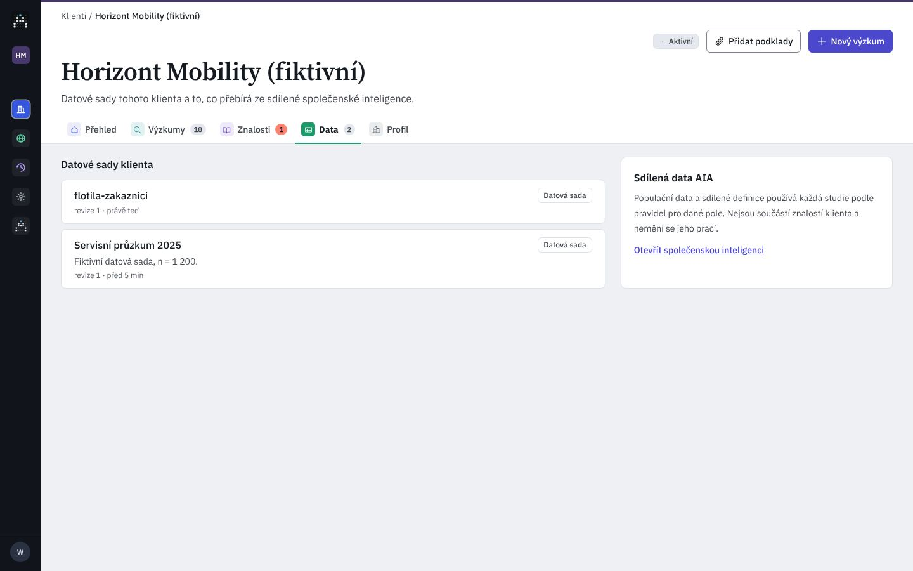
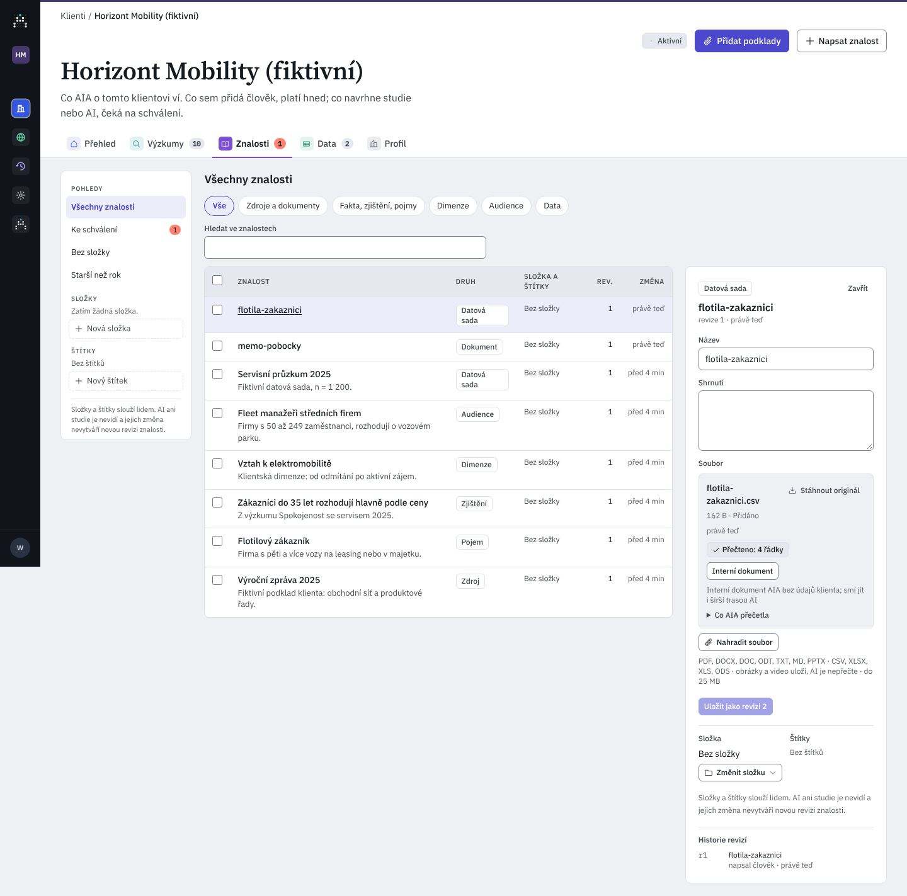

Co AIA o klientovi ví, ve složkách jako na Disku: soubory, datové sady, fakta, zjištění i pojmy. Co přidá člověk, platí hned; co navrhne studie nebo AI, čeká na schválení.
Vybráno: {{nChk}}
VýběrNázevPřečteno · druhŠtítky · kam smíZměnaAkce
Složka je prázdná. Přetáhněte sem soubor ze seznamu, nebo z počítače: AIA ho uloží ke klientovi a přečte.
Zobrazí se nejvýš 200 položek; u víc zpřesněte výběr nebo hledání.
UX kritika · Znalosti: složky, soubory a znalosti jako Disk
Nigel 27. 10.: „preserve the folder and tag logic but create a more google drive like UX for organizing documents… folders within folders“; týž večer (předal PM koordinátor, Nigel potvrdil zde): Data se slučují do Znalostí, datová sada je druh znalosti, „Sdílená data AIA“ jdou do Společenské inteligence; každá studie má složku se Vstupy a Výstupy, do Výstupů jdou odpovědi AI respondentů (XLSX, JSON) a každé stažení. Kód develop @ a1a9a45c; C/ = …/components/aia/clients/, L/ = apps/web/src/lib/, CS/ = apps/api/…/routers/client_sources.py, W/ = apps/api/…/routers/workspace.py, T/ = packages/aia_core/…/infrastructure/tables.py.
Dnes: Znalosti (1440 px)

Složky ploché, druhy jako pilulky, Nový výzkum na této záložce chybí.
Dnes: Data (1440 px)

Dokument memo-pobocky.md tu není, i když je to soubor klienta.
Dnes: soubor uvnitř položky (CSV)

„Interní dokument“ je tlačítko, ne přepínač; vysvětlení je jedna hustá věta.
{{c.l}}{{c.t}}
{{x.t}}{{x.a}}
fFunkce dnes (Znalosti i Data) → kde jsou v prototypu
#Funkce dnesV prototypu
#Funkce dnesV prototypu
{{f.i}}{{f.t}}{{f.a}}{{f.w}}
{{toast}}
Přesunout {{moveWhat}}
Přesun nemění znalost ani její revizi; AI a studie složky nevidí.
Smazat {{delWhat}}?
Znalost i soubor zmizí natrvalo a nejde je vrátit. AI ani nové studie je už neuvidí. Studie, které ji už použily, si drží svou zmrazenou kopii; jejich běhy a zprávy se nemění.
no backendSmazání se zapíše do auditu: kdo, kdy, která znalost.